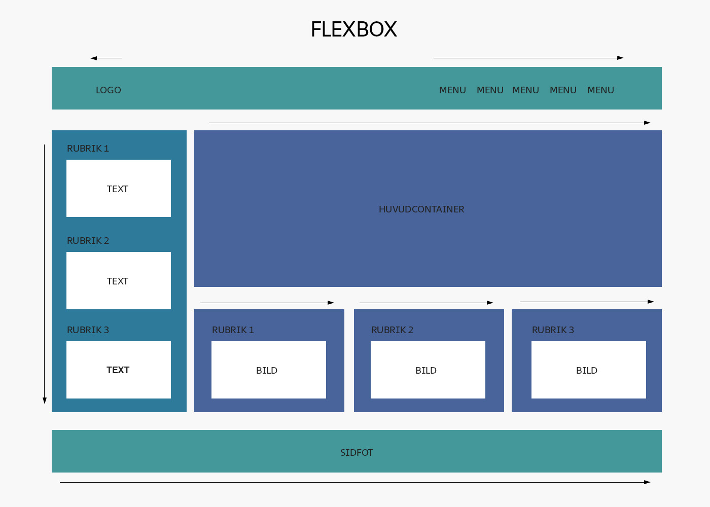
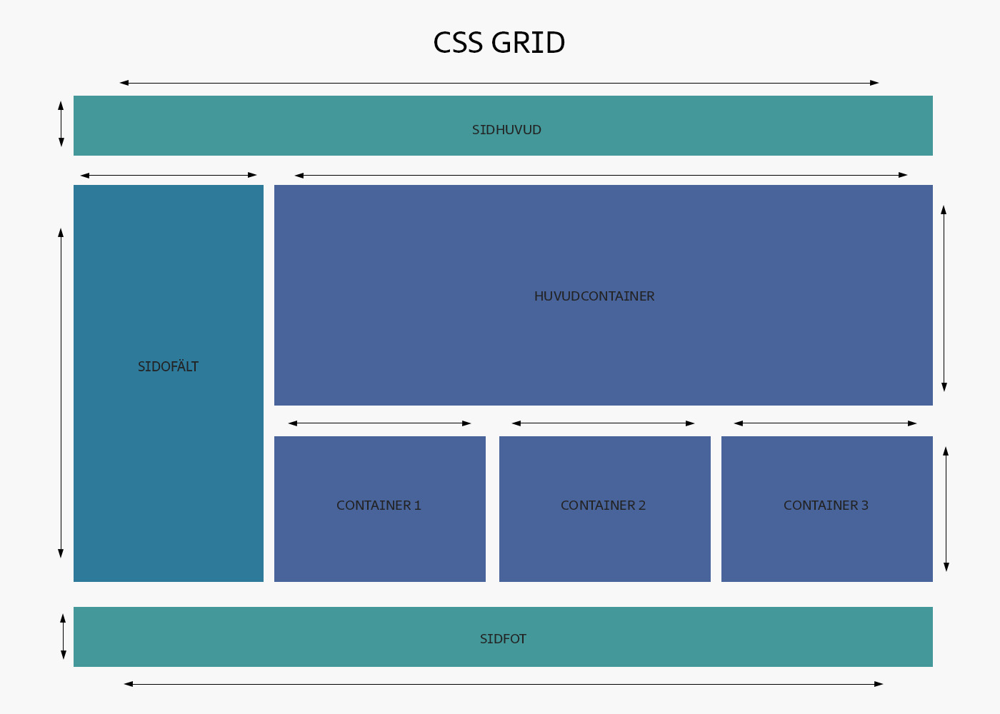

Ska jag använda Flexbox eller CSS Grid?
Flexbox och CSS Grid är två metoder för att bygga upp en layout med CSS. De jämförs ofta med varandra, trots att det är ganska stor skillnad mellan dem. I den här artikeln delar jag med mig av fördelar och nackdelar med de båda metoderna. Läs mer här.
För- & nackdelar med Flexbox
- Flexbox är bra för att strukturera innehållet (rubriker, stycken, länkar m.m.) i olika element (containers, sidhuvud, brödtext m.m.).
- Bra för endimensionella element, det vill säga element som ska riktas åt ett håll (antingen i en rad eller i en spalt).
- Inte det bästa valet för tvådimensionella layouter.
- Kräver ofta mindre kod än CSS Grid vid enkla upplinjeringar.
- Bra om man behöver mer självständiga "flexbarn" som kan ha flexibla storlekar.

För- & nackdelar med CSS Grid
CSS Grid kan vara förvirrande på grund av dess tvådimensionalitet som du påverkar med CSS-egenskaperna
grid-column och grid-row.
- Bra för att strukturera den övergripande layouten på en sida.
- Bra för tvådimensionella element där du vill styra både rader och kolumner samtidigt.
- Ger hög kontroll över elementets "barn".
- Mindre lämpat för enkla, endimensionella komponenter.

Slutsats
Sammanfattningsvis bör båda användas i din layout! CSS Grid är bra när man ska göra större layouter med tvådimensionella element, medan Flexbox är bättre för endimensionella layouter som t.ex. en navbar, knapp eller kort på webbsidan.
Grid är bäst när du vill ha full kontroll över alla undersektioner, medan Flexbox tillåter barn-elementen att vara mer flexibla och anpassa sig efter sitt innehåll.